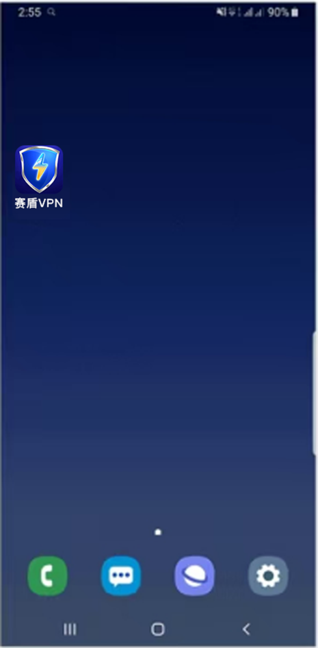

返回
欢迎查看常见问题
智慧服务，让您使用更简单

关闭三星手机杀后台让赛盾 VPN 稳定运行
赛盾VPN 受到三星手机后台管理和电池管理影响可能会被系统强制关停，请按照这里的设定调整您的手机才能正常使用
三星手机存在比较严重的“杀后台”现象，这会让赛盾VPN 无法正常工作。请按照这里的说明设置一下您的手机，您才能正常使用 赛盾VPN 的 VPN 服务功能。
由于三星手机实在众多，这里只针对 One U和新版本的 Samsung Experience 两个界面系统进行设定说明。若这里的描述信息与您手机中看到的情况不大相同，请您参考这个文章看一下您的手机情况。
您需要找到并设定如下三个项目：
多任务管理界面锁定“赛盾 VPN”
设定“赛盾 VPN”允许后台活动:
保证系统的电池“用电模式”不是超级省电
若您是其他品牌的手机，请您参考《每隔几分钟就不好用了，赛盾 VPN 太不稳定了?》文章的说明。其中也介绍了为什么“杀后台”会影响您的使用。
锁定“赛盾 VPN”App

上图的操作步骤是:
1.点击左下角的菜单键，打开“多任务管理”界面;
2.在列表中找到“赛盾 VPN”,请长按顶部的快连图标;
3.在弹出的选择界面中选择“锁定此应用程序”
4.操作完成后多任务管理界面中“赛盾 VPN”右下角会多出一个锁定的锁头标记，这说明已经设定成功了;
若您使用的是 Samsung Experience 系统，您在“多任务管理”界面中“赛盾 VPN”右上角会看到三个点的菜单键，请点开后做相同操作即可
允许后台运行
上面的操作步骤是：
1.在您的手机中找到“智能管理器”，他是三星原厂的手机管理软件
2.在软件内进入“应用程序管理”栏目当中:
3.再到“管理自动运行”项目中找到“赛盾VPN”，开启这个选项后“允许后台运行”的设定就完成了:
确保系统的电池模式不是“超级省电

上面介绍的操作步骤如下
1.在智能管理器中，进入“电池”栏目;
2.点击“用电模式”，确保系统的用电模式不是“超级省电”即可
如果您手机中没有这个“智能管理器”的软件，请进入手机“设置”App 当中，在“应用程序”列表中找到“赛盾 VPN”。在“赛盾 VPN”的信息页的管理电池使用量”的项目中启动“允许后台活动并且在“优化电池使用量”中针对“赛盾 VPN”关闭电池优化选择。
上面三步全部设定完成后，您就可以试试超稳定版本的“赛盾 VPN”服务了。
注:若您在下载和使用过程中有任何问题，您随时可以发送邮件给 {{kfEmail}}，将由专业的客户服务人员帮助您获取到最新版本的软件。